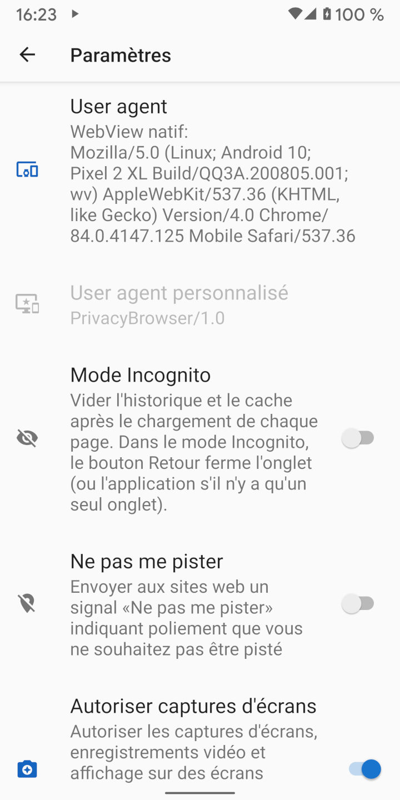
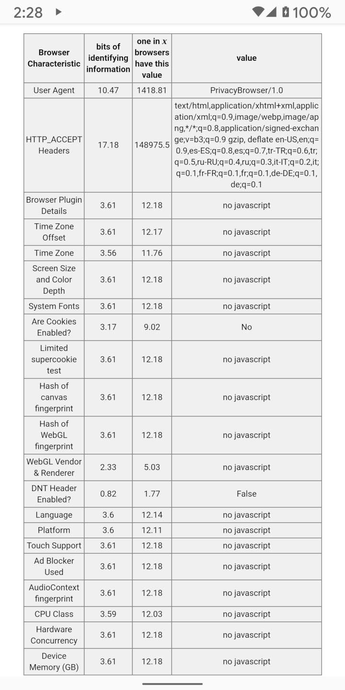

Lorsque les navigateurs Web se connectent à des sites Web, ils envoient un agent utilisateur, qui identifie le navigateur et les fonctionnalités de rendu dont il dispose. Le serveur Web peut utiliser ces informations pour choisir la version du site Web à envoyer au navigateur. Par exemple, de nombreux sites Web ont des versions différentes pour les navigateurs de bureau et mobiles.
Par défaut, Clear Browser utilise son propre agent utilisateur, à savoir ClearBrowser/1.0. Cela envoie un minimum d'informations au serveur Web.
Étant donné que les serveurs Web ne reconnaissent pas qu'il s'agit d'un agent d'utilisateur mobile, ils affichent généralement la version de bureau du site.
En comparaison, l'agent utilisateur par défaut de WebView divulgue une grande quantité d'informations sur le matériel et les logiciels du périphérique. Sur l'écran Paramètres, sélectionner WebView Par défaut car l'Agent utilisateur affiche l'agent utilisateur qui sera envoyé. La capture d'écran ci-dessous montre un Pixel 2 XL sous Android 10 avec Android System WebView 84.0.4147.125 installé. La plupart des serveurs Web le reconnaîtront comme un navigateur mobile et afficheront la version mobile du site, le cas échéant.
L'agent utilisateur contient suffisamment d'informations pour que, parfois, seuls quelques visiteurs d'un site Web soient identiques. Si l'agent utilisateur est combiné à une autre information d'identification non unique, il en résulte souvent une empreinte digitale unique. Electronic Frontier Foundation a créé un outil appelé Panopticlick afin de démontrer la quantité d'informations pouvant être collectées à partir de ces sources. Si ce test est exécuté avec JavaScript activé, la quantité d'informations divulguées augmente considérablement. Les Fuites du navigateur et les Suis-je unique sont également de bonnes sources d'informations sur ce sujet.
Il existe plusieurs agents d'utilisateur prédéfinis qui correspondent aux navigateurs et systèmes d'exploitation courants.
Pour les empreintes digitales du navigateur, tout ce qui est rare est plus facile à suivre.
Si Clear Browser devient commun et que de nombreuses personnes utilisent ClearBrowser/1.0 en tant qu'agent utilisateur, ce sera un bon choix pour la confidentialité.
Firefox ou Chrome sont les agents utilisateurs les plus courants, mais ils se mettent à jour automatiquement et leurs numéros de version changent si rapidement
qu'il est probable que les agents utilisateurs inclus dans Clear Browser soient souvent en décalage avec la majorité des agents utilisateurs dans les journaux du serveur.
Certains sites Web ne fonctionnent pas correctement s'ils ne reconnaissent pas l'agent utilisateur. L'utilisation des paramètrages de domaine pour définir l'agent utilisateur sur WebView par défaut , ou sur un autre agent utilisateur communément reconnu, résout généralement le problème. WebView d'Android ne permet pas à l'agent utilisateur d'être vide. Si tel est le cas, WebView envoie simplement l'agent utilisateur par défaut au serveur.